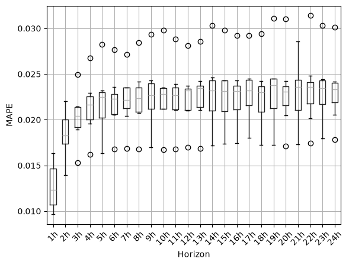

Multiple horizons predictive modeling#
Environment setup#
We need to install some extra dependencies for this notebook if needed (when running jupyterlite).
%pip install -q skrub altair holidays plotly nbformat polars
Note: you may need to restart the kernel to use updated packages.
import datetime
import re
import warnings
from pathlib import Path
import altair
import cloudpickle
import numpy as np
import polars as pl
import pyarrow # noqa: F401
import skrub
import tzdata # noqa: F401
from sklearn.ensemble import HistGradientBoostingRegressor
from feature_engineering_lib import (
feature_engineering_outputs,
load_electricity_history_data,
)
from single_horizon_prediction_lib import (
TimeSeriesSplitter,
get_cv_results,
get_regressor,
)
from tutorial_helpers import plot_horizon_forecast
# Ignore warnings from pkg_resources triggered by Python 3.13's multiprocessing.
warnings.filterwarnings("ignore", category=UserWarning, module="pkg_resources")
Predicting multiple horizons with a grid of single output models#
We now have a pipeline that makes predictions for 1 horizon. To predict
multiple horizons, we just need to make one prediction for each horizon and
group them in a single dataframe. This follows the strategy of
Direct multi-step forecasting
where an independent model is trained for each horizon.

def concat_horizons(predictions):
"""
Consolidate predictions of models for different horizons in one dataframe.
"""
return pl.DataFrame({f"{h}h": v for h, v in predictions.items()})
def make_multi_horizon_pred(features, y):
"""
Create a full DataOp for predicting the specified horizons.
"""
regressor = get_regressor()
predictions = {
h: feat.skb.drop(["prediction_time", "target_time"])
.skb.apply(regressor, y=y[f"{h}h"])
.skb.set_name(f"pred_{h}h")
for h, feat in features.items()
}
return skrub.deferred(concat_horizons)(predictions)
We inspect the pipeline on an example with only 3 horizons so that it is fast and reasonably easy to visualize. Later we will cross-validate a pipeline for all horizons between 1 and 25 hours.
TIME_HORIZONS = (1, 12, 24)
features, y = feature_engineering_outputs(TIME_HORIZONS, cv_splitter=TimeSeriesSplitter())
pred = make_multi_horizon_pred(features, y)
pred
Show/Hide graph
| 1h | 12h | 24h |
|---|---|---|
| 5.85e+04 | 6.43e+04 | 5.73e+04 |
| 5.74e+04 | 6.10e+04 | 5.73e+04 |
| 5.65e+04 | 5.89e+04 | 5.54e+04 |
| 6.07e+04 | 5.75e+04 | 5.57e+04 |
| 6.57e+04 | 5.76e+04 | 5.85e+04 |
| 4.36e+04 | 3.97e+04 | 4.07e+04 |
| 4.02e+04 | 4.10e+04 | 4.03e+04 |
| 3.76e+04 | 4.23e+04 | 3.89e+04 |
| 3.54e+04 | 4.19e+04 | 3.63e+04 |
| 3.34e+04 | 4.06e+04 | 3.37e+04 |
1h
Float64- Null values
- 0 (0.0%)
- Unique values
-
36,602 (100.0%)
This column has a high cardinality (> 40).
- Mean ± Std
- 4.98e+04 ± 1.04e+04
- Median ± IQR
- 4.81e+04 ± 1.41e+04
- Min | Max
- 2.94e+04 | 8.48e+04
12h
Float64- Null values
- 0 (0.0%)
- Unique values
-
36,571 (99.9%)
This column has a high cardinality (> 40).
- Mean ± Std
- 4.98e+04 ± 1.04e+04
- Median ± IQR
- 4.81e+04 ± 1.40e+04
- Min | Max
- 2.96e+04 | 8.40e+04
24h
Float64- Null values
- 0 (0.0%)
- Unique values
-
36,518 (99.7%)
This column has a high cardinality (> 40).
- Mean ± Std
- 4.98e+04 ± 1.04e+04
- Median ± IQR
- 4.81e+04 ± 1.41e+04
- Min | Max
- 2.93e+04 | 8.42e+04
No columns match the selected filter: . You can change the column filter in the dropdown menu above.
| Column | Column name | dtype | Is sorted | Null values | Unique values | Mean | Std | Min | Median | Max |
|---|---|---|---|---|---|---|---|---|---|---|
| 0 | 1h | Float64 | False | 0 (0.0%) | 36602 (100.0%) | 4.98e+04 | 1.04e+04 | 2.94e+04 | 4.81e+04 | 8.48e+04 |
| 1 | 12h | Float64 | False | 0 (0.0%) | 36571 (99.9%) | 4.98e+04 | 1.04e+04 | 2.96e+04 | 4.81e+04 | 8.40e+04 |
| 2 | 24h | Float64 | False | 0 (0.0%) | 36518 (99.7%) | 4.98e+04 | 1.04e+04 | 2.93e+04 | 4.81e+04 | 8.42e+04 |
No columns match the selected filter: . You can change the column filter in the dropdown menu above.
Please enable javascript
The skrub table reports need javascript to display correctly. If you are displaying a report in a Jupyter notebook and you see this message, you may need to re-execute the cell or to trust the notebook (button on the top right or "File > Trust notebook").
We want to define a scorer that will produce the Mean Absolute Percentage Error (MAPE) for each of the horizons, and also averaged across horizons. To easily try our metric function on actual values and debug it, we collect ground truth and predictions on an example train/test split.
split = pred.skb.train_test_split()
learner = pred.skb.make_learner().fit(split["train"])
predicted_y_test = learner.predict(split["test"])
predicted_y_test
| 1h | 12h | 24h |
|---|---|---|
| f64 | f64 | f64 |
| 42765.391545 | 51125.990252 | 44125.195628 |
| 42509.134509 | 49143.646866 | 43462.550976 |
| 45511.640797 | 48188.469582 | 43192.41544 |
| 49043.916002 | 47126.434067 | 44788.846735 |
| 55395.829505 | 48352.037015 | 49722.940674 |
| … | … | … |
| 43580.865331 | 39657.240785 | 40846.316706 |
| 40063.27626 | 41149.408965 | 40719.378621 |
| 37839.952604 | 42377.266564 | 39207.342329 |
| 35455.568091 | 41641.638776 | 36660.629994 |
| 33776.350119 | 40724.279013 | 34187.40051 |
For multioutput regression, we can mean_absolute_percentage_error to return
the error for each target, without averaging:
from sklearn.metrics import mean_absolute_percentage_error
mean_absolute_percentage_error(split["y_test"], predicted_y_test, multioutput="raw_values")
array([0.0109363 , 0.02330665, 0.02454494])
We will therefore use multioutput='raw_values' and return all the errors in
a dictionary, after adding the averaged error.
Once we have defined this function of true and predicted electricity loads, (what scikit-learn calls a ‘metric’), we wrap it in a ‘scorer’, a function that takes an estimator, X and y. Scorers can return a single score, or a dictionary mapping metric names (in our case ‘neg_mape_1h’, ‘neg_mape_2h’, …) to scores.
def neg_mape(y_true, y_pred):
average = mean_absolute_percentage_error(y_true, y_pred)
detail = mean_absolute_percentage_error(y_true, y_pred, multioutput="raw_values")
return {"neg_mape_average": -average} | {
f"neg_mape_{c}": -float(s) for c, s in zip(y_true.columns, detail)
}
def neg_mape_scorer(estimator, X, y):
return neg_mape(y, estimator.predict(X))
# We set this as the default scorer on our pipeline.
pred = make_multi_horizon_pred(features, y).skb.with_scoring(neg_mape_scorer)
Now that we have configured the scorer, we can check the score of our pipeline on the example split:
pred.skb.make_learner().fit(split["train"]).score(split["test"])
{'neg_mape_average': -0.01959596279596866,
'neg_mape_1h': -0.01093630223297271,
'neg_mape_12h': -0.023306646773789238,
'neg_mape_24h': -0.024544939381144035}
Out-of-sample check:#
it is always good that our pipeline can make a prediction on some truly left-out data, as a sanity check which could find bugs in the way we set it up or did the cross-validation.
electricity_load_history = load_electricity_history_data()
history_dates = electricity_load_history["time"]
history_dates.max()
datetime.datetime(2025, 6, 27, 14, 45, tzinfo=zoneinfo.ZoneInfo(key='UTC'))
new_date = ((history_dates - datetime.timedelta(seconds=1)).dt.truncate("1h")).max()
new_date
datetime.datetime(2025, 6, 27, 14, 0, tzinfo=zoneinfo.ZoneInfo(key='UTC'))
# fit a model for 24 horizons on all available data
features_24_horizons, y_24_horizons = feature_engineering_outputs(
range(1, 25), TimeSeriesSplitter()
)
pred_24_horizons = make_multi_horizon_pred(features_24_horizons, y_24_horizons).skb.with_scoring(
neg_mape_scorer
)
learner = pred_24_horizons.skb.make_learner(fitted=True)
future_pred = learner.predict({"start": new_date, "end": None})
future_pred
| 1h | 2h | 3h | 4h | 5h | 6h | 7h | 8h | 9h | 10h | 11h | 12h | 13h | 14h | 15h | 16h | 17h | 18h | 19h | 20h | 21h | 22h | 23h | 24h |
|---|---|---|---|---|---|---|---|---|---|---|---|---|---|---|---|---|---|---|---|---|---|---|---|
| f64 | f64 | f64 | f64 | f64 | f64 | f64 | f64 | f64 | f64 | f64 | f64 | f64 | f64 | f64 | f64 | f64 | f64 | f64 | f64 | f64 | f64 | f64 | f64 |
| 48892.053791 | 49059.045975 | 48588.376548 | 46705.851853 | 45695.433167 | 46613.319596 | 45413.020734 | 42898.747953 | 39731.11463 | 38407.726154 | 36718.746316 | 34838.300289 | 35071.223475 | 36262.624886 | 37193.03485 | 38703.423855 | 41705.131207 | 44476.383982 | 45359.369811 | 47384.806123 | 46671.181363 | 45909.650138 | 44822.052396 | 44819.781898 |
import plotly.graph_objects as go
def plot_line(x, y):
return go.Scatter(
x=x,
y=y,
mode="lines+markers",
name=y.name,
hovertemplate="%{x|%Y-%m-%dT%H} (%{x|%A}): %{y}<extra></extra>",
)
def transpose_pred(prediction_date, prediction):
date = [
prediction_date + datetime.timedelta(hours=int(c.removesuffix("h")))
for c in prediction.columns
]
load = prediction.row(0)
return pl.DataFrame({"time": date, "load_mw": load})
future_pred_tall = transpose_pred(new_date, future_pred)
history_tail = electricity_load_history.filter(
pl.col("time") > new_date - datetime.timedelta(days=8)
)
fig = go.Figure()
fig.add_trace(plot_line(history_tail["time"], history_tail["load_mw"]))
fig.add_trace(plot_line(future_pred_tall["time"], future_pred_tall["load_mw"]))
fig.update_layout(height=700)
Now we make the predictions and plot them. We notice that the 1h horizon qualitatively seems to stick better to the ground truth, which is expected and also corresponds to what we see in the MAPE.
cv_predictions, cv_scores = get_cv_results(pred)
split 0: 2023-04-01T00:00:00+00:00
{'neg_mape_average': -0.024471135795009254, 'neg_mape_1h': -0.014805037906476836, 'neg_mape_12h': -0.028259825431224957, 'neg_mape_24h': -0.030348544047325964}
split 1: 2023-07-01T00:00:00+00:00
{'neg_mape_average': -0.021323342371473653, 'neg_mape_1h': -0.015393468200326325, 'neg_mape_12h': -0.023993061596276267, 'neg_mape_24h': -0.024583497317818358}
split 2: 2023-10-01T00:00:00+00:00
{'neg_mape_average': -0.020645933212008735, 'neg_mape_1h': -0.012677730817541746, 'neg_mape_12h': -0.02358709944686179, 'neg_mape_24h': -0.025672969371622667}
split 3: 2024-01-01T00:00:00+00:00
{'neg_mape_average': -0.02110222712590451, 'neg_mape_1h': -0.01650109402589106, 'neg_mape_12h': -0.023190912143637474, 'neg_mape_24h': -0.023614675208184995}
split 4: 2024-04-01T00:00:00+00:00
{'neg_mape_average': -0.019973180900785318, 'neg_mape_1h': -0.013053001529247906, 'neg_mape_12h': -0.02331867635921841, 'neg_mape_24h': -0.02354786481388964}
split 5: 2024-07-01T00:00:00+00:00
{'neg_mape_average': -0.014808479660298862, 'neg_mape_1h': -0.009670011782941045, 'neg_mape_12h': -0.016792352933645213, 'neg_mape_24h': -0.017963074264310323}
split 6: 2024-10-01T00:00:00+00:00
{'neg_mape_average': -0.018249055575386555, 'neg_mape_1h': -0.0106765405326316, 'neg_mape_12h': -0.022090712637732525, 'neg_mape_24h': -0.021979913555795545}
split 7: 2025-01-01T00:00:00+00:00
{'neg_mape_average': -0.017425208955882673, 'neg_mape_1h': -0.010703296016384005, 'neg_mape_12h': -0.02100289430236188, 'neg_mape_24h': -0.020569436548902132}
split 8: 2025-04-01T00:00:00+00:00
{'neg_mape_average': -0.01959596279596866, 'neg_mape_1h': -0.01093630223297271, 'neg_mape_12h': -0.023306646773789238, 'neg_mape_24h': -0.024544939381144035}
def plot_predictions(cv_predictions, horizons=None, start="2025-03-01"):
if start is not None:
cv_predictions = cv_predictions.filter(
pl.col("prediction_time")
> datetime.datetime.fromisoformat(start).astimezone(datetime.UTC)
)
if horizons is None:
horizons = [
int(m.group(1))
for c in cv_predictions.columns
if (m := re.match(r"^pred_(\d+)h$", c)) is not None
]
fig = go.Figure()
for i, h in enumerate(horizons):
target_time = cv_predictions["prediction_time"] + datetime.timedelta(hours=h)
if i == 0:
fig.add_trace(plot_line(target_time, cv_predictions[f"{h}h"].rename("true_load")))
fig.add_trace(plot_line(target_time, cv_predictions[f"pred_{h}h"]))
fig.update_layout(height=700)
return fig
plot_predictions(cv_predictions)
Finally, we run the cross-validation for all 24 horizons
cv_scores = pred_24_horizons.skb.cross_validate(verbose=2)
cv_scores
[CV] END .................................................... total time= 21.5s
[CV] END .................................................... total time= 22.0s
[CV] END .................................................... total time= 22.4s
[CV] END .................................................... total time= 23.1s
[CV] END .................................................... total time= 23.6s
[CV] END .................................................... total time= 24.1s
[CV] END .................................................... total time= 24.5s
[CV] END .................................................... total time= 25.1s
[CV] END .................................................... total time= 25.6s
[Parallel(n_jobs=1)]: Done 9 out of 9 | elapsed: 3.6min finished
| fit_time | score_time | test_neg_mape_average | test_neg_mape_1h | test_neg_mape_2h | test_neg_mape_3h | test_neg_mape_4h | test_neg_mape_5h | test_neg_mape_6h | test_neg_mape_7h | ... | test_neg_mape_15h | test_neg_mape_16h | test_neg_mape_17h | test_neg_mape_18h | test_neg_mape_19h | test_neg_mape_20h | test_neg_mape_21h | test_neg_mape_22h | test_neg_mape_23h | test_neg_mape_24h | |
|---|---|---|---|---|---|---|---|---|---|---|---|---|---|---|---|---|---|---|---|---|---|
| 0 | 16.608883 | 4.867383 | -0.028108 | -0.014679 | -0.021602 | -0.024933 | -0.026739 | -0.028243 | -0.027661 | -0.027152 | ... | -0.029827 | -0.029237 | -0.029197 | -0.029403 | -0.031066 | -0.031020 | -0.028584 | -0.031398 | -0.030313 | -0.030114 |
| 1 | 17.313550 | 4.711383 | -0.023085 | -0.015213 | -0.020015 | -0.021446 | -0.022339 | -0.023186 | -0.022347 | -0.023494 | ... | -0.024320 | -0.023735 | -0.024337 | -0.023635 | -0.024093 | -0.023648 | -0.024704 | -0.024113 | -0.024444 | -0.024061 |
| 2 | 17.636378 | 4.717337 | -0.022666 | -0.012353 | -0.018259 | -0.019969 | -0.020856 | -0.021762 | -0.022302 | -0.022178 | ... | -0.024291 | -0.024278 | -0.024523 | -0.024254 | -0.024517 | -0.024259 | -0.024387 | -0.024828 | -0.023445 | -0.023943 |
| 3 | 18.255473 | 4.848898 | -0.022375 | -0.016369 | -0.022061 | -0.021389 | -0.021678 | -0.022456 | -0.022268 | -0.022039 | ... | -0.022894 | -0.023141 | -0.023216 | -0.023136 | -0.023628 | -0.023100 | -0.023024 | -0.022896 | -0.023192 | -0.023178 |
| 4 | 18.842840 | 4.771885 | -0.022766 | -0.013541 | -0.018912 | -0.020873 | -0.022915 | -0.023021 | -0.023604 | -0.023546 | ... | -0.023115 | -0.022929 | -0.023230 | -0.023009 | -0.023806 | -0.023348 | -0.023610 | -0.023581 | -0.023681 | -0.023348 |
| 5 | 19.313317 | 4.796933 | -0.016605 | -0.009647 | -0.013969 | -0.015308 | -0.016225 | -0.016368 | -0.016818 | -0.016873 | ... | -0.017406 | -0.017435 | -0.018002 | -0.017251 | -0.017277 | -0.017101 | -0.017331 | -0.017410 | -0.017936 | -0.017808 |
| 6 | 19.845960 | 4.660393 | -0.020373 | -0.010693 | -0.016111 | -0.018911 | -0.019551 | -0.020253 | -0.020611 | -0.021278 | ... | -0.020935 | -0.021128 | -0.021576 | -0.020891 | -0.021262 | -0.021556 | -0.021053 | -0.021755 | -0.021732 | -0.021904 |
| 7 | 20.411500 | 4.676423 | -0.019939 | -0.010304 | -0.017405 | -0.019163 | -0.020021 | -0.019597 | -0.020514 | -0.020446 | ... | -0.020605 | -0.020606 | -0.020226 | -0.020245 | -0.020845 | -0.020487 | -0.020575 | -0.020149 | -0.020356 | -0.020531 |
| 8 | 20.881424 | 4.692086 | -0.022544 | -0.010917 | -0.017736 | -0.020438 | -0.022526 | -0.022730 | -0.022834 | -0.023493 | ... | -0.023537 | -0.023499 | -0.023716 | -0.023021 | -0.024520 | -0.022870 | -0.023746 | -0.024018 | -0.024301 | -0.024179 |
9 rows × 27 columns
We can plot horizon vs MAPE to see if shorter horizons are easier to predict:
from matplotlib import pyplot as plt
(cv_scores.filter(regex="test_neg_mape_.*h") * -1).rename(
columns=lambda c: c.removeprefix("test_neg_mape_")
).boxplot()
plt.xticks(rotation=45)
plt.xlabel("Horizon")
plt.ylabel("MAPE")
Text(0, 0.5, 'MAPE')

Hyperparameter Tuning#
We load the dataop we dumped in the previous notebook and search for the best hyperparameters with optuna.
env = {"start": "2021-03-23", "end": "2025-05-31"}
We keep the last split of the default splitter as a held-out test set on which to validate the selected pipeline.
for outer_split in pred.skb.iter_cv_splits(env):
pass
outer_split["X_test"]
| prediction_time |
|---|
| datetime[μs, UTC] |
| 2025-04-01 00:00:00 UTC |
| 2025-04-01 01:00:00 UTC |
| 2025-04-01 02:00:00 UTC |
| 2025-04-01 03:00:00 UTC |
| 2025-04-01 04:00:00 UTC |
| … |
| 2025-05-30 20:00:00 UTC |
| 2025-05-30 21:00:00 UTC |
| 2025-05-30 22:00:00 UTC |
| 2025-05-30 23:00:00 UTC |
| 2025-05-31 00:00:00 UTC |
We use persistent storage for our optuna database so we can resume or inspect it after the current process exits.
%pip install -q optuna
# import optuna
# print(f"optuna version: {optuna.__version__}")
Note: you may need to restart the kernel to use updated packages.
To keep the notebook fast we reload an existing search that has 100 iterations (specified by storage and study_name), and resume it to add 2 more iterations.
search = pred.skb.make_randomized_search(
backend="optuna",
storage="sqlite:///multiple_horizons_prediction.optuna",
study_name="randomized_search",
n_iter=2,
n_jobs=1,
refit="neg_mape_average",
)
search.fit(outer_split["train"])
search.score(outer_split["test"])
Running optuna search for study randomized_search in storage sqlite:///multiple_horizons_prediction.optuna
[I 2026-10-09 07:58:09,491] Using an existing study with name 'randomized_search' instead of creating a new one.
[I 2026-10-09 07:58:56,105] Trial 100 finished with value: -0.018830730501862 and parameters: {'0:temperature_only': '0:True', '1:cities': "0:'all'", '2:learning_rate': 0.06666250450026139, '3:loss': "2:'gamma'", '4:max_leaf_nodes': 138}. Best is trial 71 with value: -0.018680318617584624.
[I 2026-10-09 07:59:48,263] Trial 101 finished with value: -0.018727877011039368 and parameters: {'0:temperature_only': '0:True', '1:cities': "0:'all'", '2:learning_rate': 0.09317618149852065, '3:loss': "2:'gamma'", '4:max_leaf_nodes': 181}. Best is trial 71 with value: -0.018680318617584624.
[I 2026-10-09 07:59:48,285] Using an existing study with name 'randomized_search' instead of creating a new one.
{'neg_mape_average': -0.018115961679820138,
'neg_mape_1h': -0.009322857601522516,
'neg_mape_12h': -0.02266034333466307,
'neg_mape_24h': -0.022364684103274822}
search.plot_results()
Make an example prediction
search.predict({"start": "2025-06-27T15:00:00", "end": None})
| 1h | 12h | 24h |
|---|---|---|
| f64 | f64 | f64 |
| 51779.850885 | 35231.06683 | 49605.040817 |